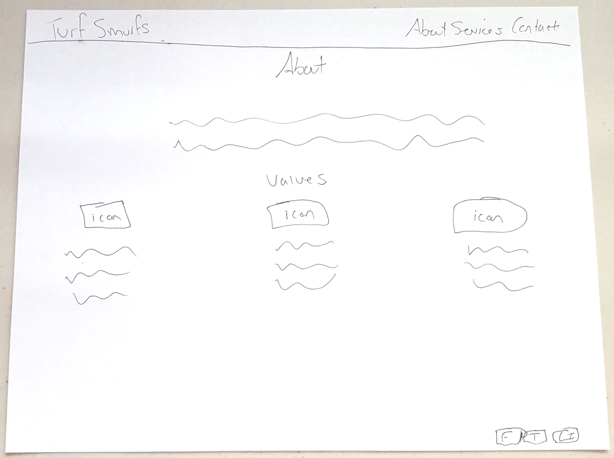
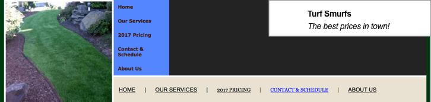
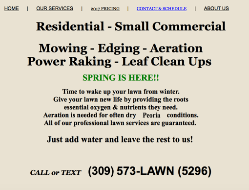
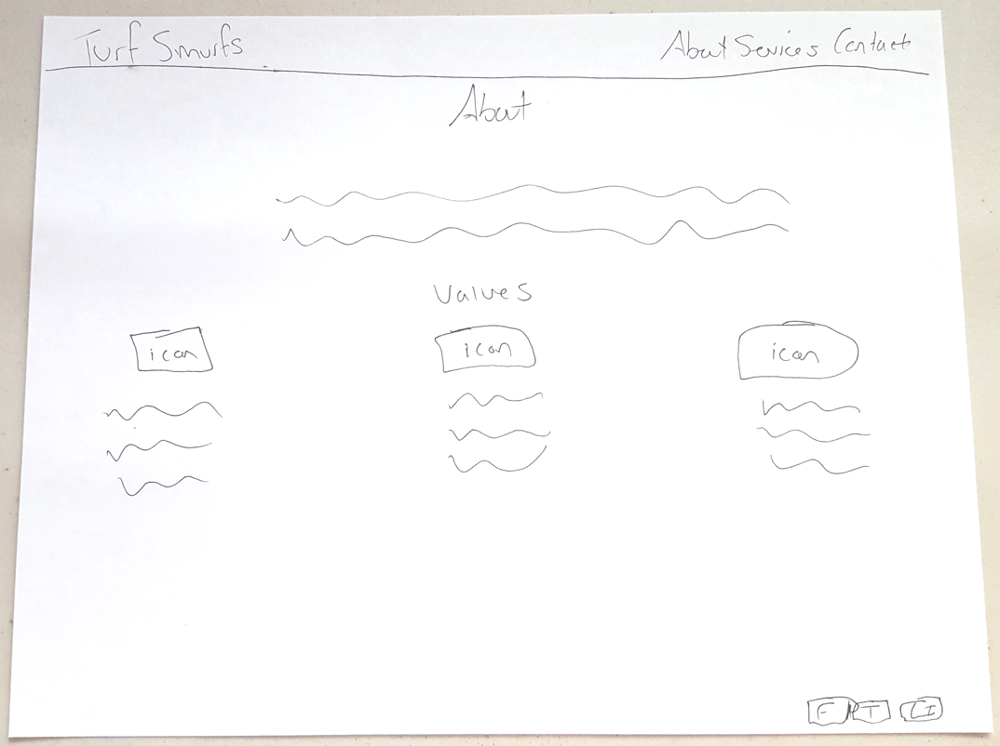

First draft landing
first sketch of services

First sketch of about page
Turf Smurfs is a growing company built around providing quality lawncare service to Central Illinois. The equipment used is of the highest caliber and the customer service is outstanding. However, their web presence definitely needed improvement. I was brought in to make some changes.
My problem was balancing user demands with Turf Smurf’s vision for a very simple and easily navigatable site. The solution needed to address the following three user stories in the most basic way possible:
As a user, I want to see all of Turf Smurf’s services.
As a user, I want to be able to contact Turf Smurfs so I can get an estimate.
As a user, I want to know I can trust this company and their service.
The branding of the site was already polished, but the layout needed refining. The previous site for Turf Smurfs was too complicated for users to navigate. It also lacked a modern edge.
Nav was super confusing for users
Landing looked more like a classified ad
To ensure a cutting edge design, I viewed the competition so I could see what I was up against. I looked at Barr Landscaping and Lawn Service, Cuttin' it Close, and TruGreen, which are three of the highest rated lawncare companies in Peoria. All three sites seemed antiquated and I was confident I could design a site that would be a head above the competition. This exploration helped kickstart some ideas for how to proceed with the layout.
I started sketching out some basic ideas. The landing is always the most pivotal page to design because if a user is not engaged and able to navigate immediately, they likely will not proceed further into the site. I knew from previous research and experience that photos engage users so I wanted to include a colorful, engaging photo.
The landing page needed to capture user trust for them to consider booking Turf Smurf’s services. To build trust, I included Turf Smurf’s values and also some testimonials.
I designed the navigation to be simple and my first call to action button easily navigates a user to the services page where they can not only view the services but also request a free estimate.
First draft landing
first sketch of services
First sketch of about page
After presenting the layout to my client, they inquired about having information segregated on separate pages instead of a longer landing page. I explained to them the benefits of having important content all included on the landing because it accomodates the natural laziness of users to minimize the clicks needed to get information. The client agreed and I delivered the following design.
You’ll notice the landing page has changed in layout to accomodate a more modern and edgy design. I also wanted to conserve more space and allow the users gaze to easily navigate the information without having to bounce around excessively.
Final low fidelity for landing
Originally, the services page did not include the gallery, meet the team, or estimate sections but through user testing I decided this would be necessary to build trust, create a friendly user experience, and ultimately gain more clients.
Final low fidelity for services
Originally, the about section did not include photos and bios of the team, just the company values. This new section however, is a huge add value for users wanting a more personal introduction to the team. This also builds trust.
Final low fidelity for about page
I was able to solve all three user stories while also balancing the needs of the user and Turf Smurf's vision. I provided users a way to view services and request an estimate. I also designed features for the site that would build trust, such as the testimonials, values, and photos of the employees with their bios. Last but not least, I kept the site very minimal and modern which fell right in line with the vision of the company. Users can now navigate the site with ease. For me, as a designer, this project was a win!